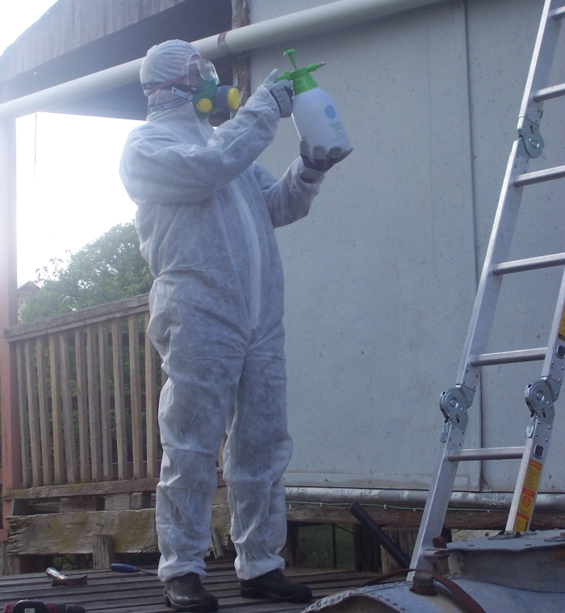
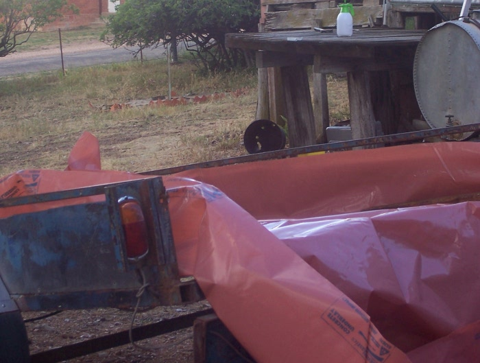
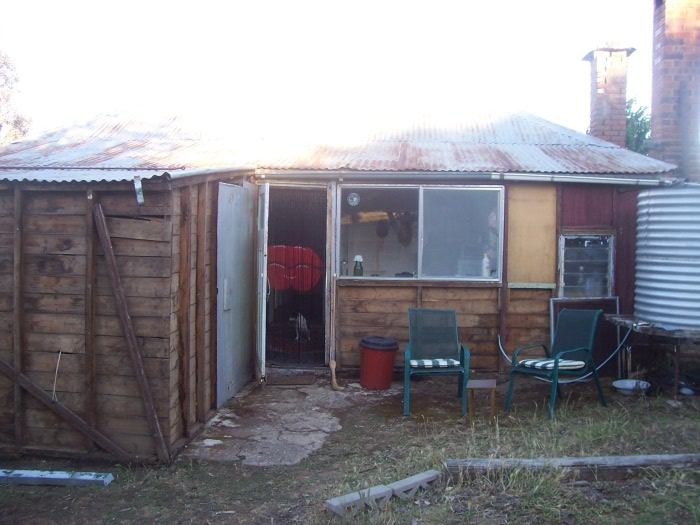
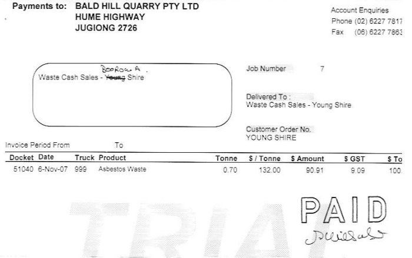

Removing The Asbestos
On January 1, 2008 the law regarding the amount of asbestos fibro you could remove without a licence went from a maximum of 50 square metres down to 10. We had fifty, so we decided that we would bust our guts to get rid of it before the end of 07. In many cases it's safer to leave asbestos where it is, paint over it, and never touch it. But all of ours was where we have alterations planned, and would need to get rid of it or cut it anyway.
The first visit in November was when we decided to do it. We needed to get it all done in one weekend, as we had to chuck out most of the gear we used after each session:

We had to spray everywhere we touched it with water, and wrap it up in 2 layers of heavy plastic:

The house looked very naked afterward:

But it was very satisfying to have it all done. The nearest tip that would take asbestos was Jugiong. We emailed a copy of the tip receipt to the Boorowa building inspector:

Home
House
Six Kitchens
Asbestos
Verandah
Tanks
Fort Veg
Orchard
Pacas